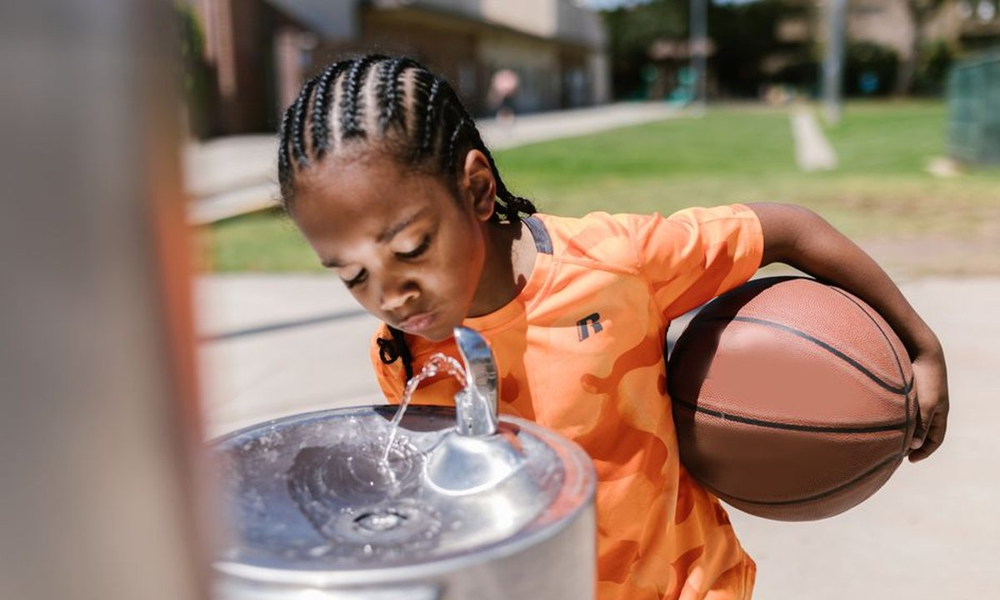
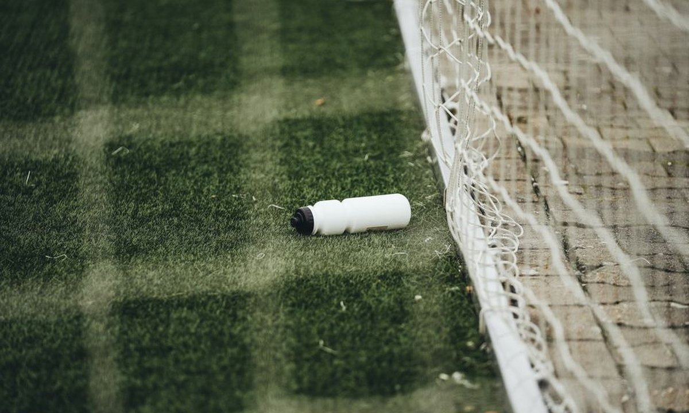

건강·영양 · 탈수는 실력을 갉아먹는 가장 흔한 적

경기 후반 갑자기 다리가 무거워지고 집중력이 흐트러진다면, 원인은 체력이 아니라 탈수일 때가 많습니다. 몸무게의 2%만 수분이 빠져도 지구력·판단력·반응속도가 눈에 띄게 떨어집니다. 특히 성장기 선수는 어른보다 탈수에 취약해, '언제 얼마나 마시는가'가 실력만큼 중요합니다.
성장기 몸은 체온 조절 방식이 어른과 다릅니다. 이 차이 때문에 같은 조건에서도 더 빨리, 더 위험하게 탈수됩니다.
아이에게는 "목마르면 마셔라"가 통하지 않습니다. 갈증을 느끼기 전에 정해진 타이밍에 마시게 하는 것이 유일하게 확실한 방법입니다.
미국스포츠의학회(ACSM)·소아과학회(AAP)의 유소년 지침을 현장에서 쓰기 쉽게 정리하면 다음과 같습니다. (아이 체격·날씨에 따라 가감)
| 시점 | 권장 섭취 | 포인트 |
|---|---|---|
| 운동 2시간 전 | 물 400~600ml | 미리 채워두기 (소변으로 과한 건 배출됨) |
| 운동 직전 (10~20분) | 물 150~250ml | 속이 부담 없을 만큼만 |
| 운동 중 | 15~20분마다 100~200ml | 목마름과 상관없이 규칙적으로 |
| 운동 후 | 빠진 체중 1kg당 약 1~1.5L | 천천히 나눠서, 색이 옅어질 때까지 |
※ 가장 정확한 방법은 운동 전후 체중 측정입니다. 줄어든 무게가 곧 빠져나간 수분량이에요.
가장 쉽고 정확한 자가진단은 소변 색입니다. 아이에게 화장실에서 스스로 확인하는 습관을 들여주세요.
그 밖의 초기 탈수 신호: 두통, 어지럼, 짜증·집중력 저하, 근육 경련(쥐), 평소보다 빠른 피로. 얼굴이 창백하고 식은땀·메스꺼움이 나타나면 열탈진 초기일 수 있으니 즉시 그늘에서 쉬고 수분을 보충해야 합니다.

땀은 물만 빠지는 게 아니라 나트륨·칼륨 같은 전해질도 함께 잃습니다. 전해질이 부족하면 근육 경련(쥐)과 피로가 심해지고, 물만 많이 마시면 오히려 혈중 나트륨이 묽어져 문제가 될 수 있습니다.
에너지드링크(카페인)는 성장기 선수에게 권장되지 않습니다. 이뇨 작용으로 오히려 탈수를 부추길 수 있어요. 탄산·과당이 높은 음료도 수분 보충용으로는 부적합합니다.
수분 관리의 핵심은 "목마르기 전에, 정해진 타이밍에, 소변 색으로 확인" 이 세 가지입니다. 특별한 보충제보다 규칙적인 물 한 모금이 성장기 선수의 컨디션과 안전을 지키는 가장 확실한 방법입니다.
🍌 다음 글: 운동선수를 위한 추천 간식 →